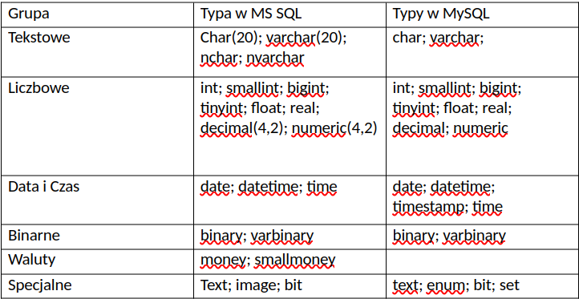

Relacyjne bazy danych
Cechy relacyjnej bazy danych:
- Trwałość danych
Trwałość danych zapisanych w bazie jest podstawową cechą baz danych. Trwałość danych oznacza, że dane zostały zapisane w bazie w sposób nieulotny. Wszystkie współczesne systemy baz danych muszą spełniać ten wymóg. Trwałość danych jest niezależna od działania aplikacji oraz od platformy sprzętowej i programowej. Dane gromadzone w bazie danych są przechowywane w pamięci zewnętrznej (dyskowej, optycznej, taśmowej). Powinny one być przechowywane w pamięci tak długo, jak długo wymagają tego użytkownicy systemu baz danych.
- Integralność (poprawność) danych
Integralność (spójność) danych oznacza, że dane muszą:
- wiernie odzwierciedlać dane rzeczywiste,
- spełniać ograniczenia nałożone przez użytkowników,
- wykazywać brak anomalii wynikających ze współbieżnego dostępu do danych.
Integralność bazy danych to także odporność na błędy i awarie wynikające z zawodności sprzętu i oprogramowania oraz odporność na błędy użytkowników.
Wyróżniamy dwa rodzaje integralności danych:
- semantyczna — oznacza zgodność danych z rzeczywistością, czyli poprawność odwzorowania rzeczywistości;
- bazowa — oznacza poprawność procesów zachodzących w bazie.
Na poziomie struktur bazy danych można wyróżnić następujące rodzaje integralności:
- referencyjna — oznacza, że każdej wartości klucza obcego odpowiada dokładnie jedna wartość klucza podstawowego;
- encji — oznacza, że każdy atrybut encji musi mieć określoną wartość;
- atrybutu — oznacza, że wartość każdego atrybutu należy do jego dziedziny.
- Bezpieczeństwo danych
Bezpieczeństwo danych oznacza, że dostęp do bazy danych mają tylko jej użytkownicy identyfikowani unikalną nazwą (loginem) i hasłem. Ponadto każdy użytkownik posiada określone uprawnienia w bazie danych. Bezpieczeństwo danych oznacza również, że baza danych jest zabezpieczona przed awarią sprzętu lub oprogramowania.
- Współdzielenie danych
Współdzielenie danych oznacza, że istnieje możliwość równoczesnej pracy wielu użytkowników z tą samą bazą danych. Użytkownicy mogą też jednocześnie pracować z tym samym zbiorem danych. Skutkiem takiej pracy mogą być konflikty w dostępie do danych, gdy jeden użytkownik modyfikuje zbiór danych, a drugi próbuje ten sam zbiór odczytać lub zmodyfikować w inny sposób. W bazie danych muszą istnieć mechanizmy zapewniające poprawne rozwiązanie takich konfliktów.
- Abstrakcja danych
Baza danych zawiera pewien model rzeczywistości. Ale przechowywane są w niej tylko niektóre dane o obiektach. Powinny one opisywać wyłącznie istotne aspekty obiektów świata rzeczywistego. Baza danych to abstrakcyjny model pewnego wycinka rzeczywistości, a jej struktura powinna w poprawny sposób odzwierciedlać obiekty świata rzeczywistego i powiązania pomiędzy tymi obiektami.
Poziomy abstrakcji:
- poziom wewnętrzny - określa sposób pamiętania danych,
- poziom pojęciowy- wyższy poziom abstrakcji danych. Definiuje dane oraz związki zachodzące między nimi,
- poziom zewnętrzny – najwyższy poziom abstrakcji danych. Opisuje sposób, w jaki dane są widziane przez użytkownika. Dla każdego użytkownika obraz danych definiuje się za pomocą schematu zewnętrznego.
- Niezależność danych
Niezależność danych polega na oddzieleniu danych od aplikacji, które używają tych danych. Niezależność danych może być rozpatrywana w dwóch aspektach:
- Logiczna niezależność danych — niezależność danych widzianych przez użytkownika (przez jego aplikacje) od logicznej struktury bazy danych (schematu pojęciowego) oraz zmian tej struktury w czasie.
- Fizyczna niezależność danych — niezależność logicznej struktury bazy danych (schematu pojęciowego) od sposobu przechowywania danych w pamięci zewnętrznej (na nośnikach zewnętrznych).
We współczesnych bazach danych niezależność danych jest osiągana tylko częściowo.
- Integracja danych
Integracja danych polega na zapewnieniu współpracy danych przechowywanych w różnych miejscach i obsługiwanych przez różne systemy. Często bazy danych fizycznie są umieszczane na różnych komputerach połączonych ze sobą w taki sposób, że użytkownik nie wie, iż dane, z którymi pracuje, pochodzą z różnych baz i komputerów. Zmiany zawartości bazy na jednym komputerze powinny być uwzględniane również na innych komputerach. Tak funkcjonujące bazy nazywamy rozproszonymi bazami danych. Bazy danych powinny być zaprojektowane tak, aby dane były zawsze dostępne, niezależnie od tego, gdzie i w jakiej postaci zostały zapisane i jak są przechowywane. Serwery bazodanowe powinny zapewniać integrację rozproszonych danych znajdujących się na wielu komputerach. Mechanizmy integracyjne dostępne na nich powinny działać w czasie rzeczywistym i współpracować z różnorodnymi bazami danych.
Typy danych
Podczas tworzenia nowej kolumny w tabelach SQL, mamy do wyboru typ danych. Bardzo to przypomina sytuację, kiedy pisząc program w języku z silnym typowaniem deklarujemy typ zmiennej. Warto poznać typy danych w MySQL, ponieważ trafny wybór pozwala nam przechowywać dane w odpowiednim formacie co ułatwi ich obsługę, istotnie wpływa na wydajność wyprzypadku dużej skali i nakłada pewne ograniczenia.

Tekstowe
CHAR(długość) - Przechowuje łańcuchy znakowe o długości od 0 do 255 znaków. CHAR jest polem o stałej długości.
VARCHAR(długość) - Przechowuje łańcuchy znakowe o zmiennej długości. Długość zmienia się w zależności od ilości znaków do przechowania.
Przyrostek n pozwala nam wstawiać znaki narodowościowe
(UWAGA! Znak specjalny rezerwuje 2 bajty)
NAZWISKO->Ząbek
CHAR(10)-> ZabekXXXXX -> 10 bajtów
VARCHAR(10)-> Zabek -> 5 bajtów
nVARCHAR(10)-> Ząbek -> 6 bajtów